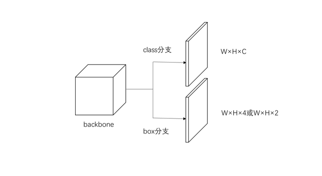

Anchor free检测算法概述
Published on
0. Anchor based v.s. anchor free
Anchor based算法
什么是anchor： 在图像中预先设置的不同大小与尺度的候选框，覆盖几乎所有位置与尺度，用于对每个位置是否存在物体进行判断。
基本步骤：Anchor based算法通常分为2步：
- 对每个anchor内的图像进行分类，以确定物体类型与其置信度
- 对置信度高的anchor边界在小范围内进行回归，以确定准确边界
Anchor free算法
顾名思义，即不使用anchor的检测算法。通常使用类似分割或关键点检测的方式直接对每个点进行处理。大致可分为2类：
- 密集预测（置信度与偏移量）的方法
- 基于关键点匹配的方法
1. 密集预测的方法
1.0 基本结构

1.1 DenseBox
Huang L, Yang Y, Deng Y, et al. Densebox: Unifying landmark localization with end to end object detection[J]. arXiv preprint arXiv:1509.04874, 2015.
结构
- class分支为人脸中心一个圆形区域的heatmap
- box分支为到边界的距离
- class分支与box分支均采用L2 loss
- 设计用于人脸检测，类别数量C=1
特点
- 将图像裁剪为patch分别进行处理
- 使用类似编码器/解码器的结构进行多尺度特征融合
- 使用hard negative mining解决正负样本不平衡的问题
- 可以使用landmark增强效果
评价
- 最早的anchor free检测算法之一，最新的同类算法仍然采用大致相同的思路，只是在细节进行改进。
1.2 UnitBox
Yu J, Jiang Y, Wang Z, et al. Unitbox: An advanced object detection network[C]//Proceedings of the 24th ACM international conference on Multimedia. 2016: 516-520.
结构
- 与DenseBox类似
- box分支采用IoU loss
特点
- 采用IoU loss将到4个边界的距离当作一个整体进行训练，提升了检测效果
评价
- 在DenseBox基础上改进了loss函数，提升效果
1.3 YOLOv1
Redmon J, Divvala S, Girshick R, et al. You only look once: Unified, real-time object detection[C]//Proceedings of the IEEE conference on computer vision and pattern recognition. 2016: 779-788.

结构
- 将图像划分为网格，并为每个网格学习B组物体存在置信度、中心点坐标与尺寸，以及属于C个类别的置信度
- 类似L2 loss的组合loss函数
特点
- 模型简单，且预测并不那么“密集”，因此的速度较快
- 但是也存在相应缺点，比如可检测的物体数量受限
评价
- 为速度而生的算法，优点与缺点都比较明显
- 后续算法改为使用anchor
1.4 CenterNet Keypoint
Zhou X, Wang D, Krähenbühl P. Objects as points[J]. arXiv preprint arXiv:1904.07850, 2019.
结构
- 学习中心点heatmap、offset与bounding box尺寸（长宽）
- 使用focal loss与L1 loss
特点
- 将每个物体当作一个点，使用关键点检测的方式进行物体检测
评价
- 虽然效果并不是最好的，但是十分简单灵活，运行速度也较快
1.5 FCOS
Tian Z, Shen C, Chen H, et al. Fcos: Fully convolutional one-stage object detection[C]//Proceedings of the IEEE international conference on computer vision. 2019: 9627-9636.
结构
- 使用FPN提取多尺度特征
- 每个尺度学习每个点的分类heatmap及其到4个边界的距离
- 添加centerness分支以减少靠近边缘的低质量点的影响
- 采用focal loss与IoU loss
特点
- 添加多尺度的处理
- 使用centerness去除低质量点，保留高质量点，以提升效果
评价
- 基本思路没有变，但是对多个细节进行了改善，从而极大地提升了检测效果
1.6 FoveaBox
Kong T, Sun F, Liu H, et al. Foveabox: Beyond anchor-based object detector[J]. arXiv preprint arXiv:1904.03797, 2019.
结构
- 使用FPN提取多尺度特征，每个尺度处理一定尺寸的物体
- class分支只对物体中心区域进行处理
- 使用focal loss与L1 loss
特点
- 添加多尺度的处理
- 受人眼的启发，只使用中心区域置的点，避免边缘低质量点的影响
评价
- 与FCOS异曲同工，相当于CenterNet Keypoint的增强
2. 基于关键点匹配的方法
2.0 基本结构
2.1 CornerNet
Law H, Deng J. Cornernet: Detecting objects as paired keypoints[C]//Proceedings of the European Conference on Computer Vision (ECCV). 2018: 734-750.
结构
- 学习左上角与右下角两个关键点heatmap
- 为每个关键点学习学习embedding并用其进行匹配
- 为每个关键点学习offset以提升精度
- 关键点采用改进的focal loss
- embedding采用push loss与pull loss
- offset采用smooth L1 loss
特点
- 提出corner pooling，首先通过边界pooling得到边界特征图，再将两个边界特征图相加得到角点特征图
评价
- 提出一种新的anchor free检测思路，通过检测关键点并进行匹配的方式得到物体的bounding box
2.2 CenterNet Triplets
Duan K, Bai S, Xie L, et al. Centernet: Object detection with keypoint triplets[J]. arXiv preprint arXiv:1904.08189, 2019, 1(2): 4.

结构
- 学习左上、右下与中心点3个关键点heatmap
- 角点学习embedding与offset，中心点学习offset
- 角点使用embedding匹配后，bounding box中心区域存在中心点则保留，否则不保留
特点
- 在corner pooling的基础上提出cascade corner pooling与center pooling，以增强关键点的特征
评价
- 基本思路延续CornerNet，添加中心点的验证以提高角点匹配准确率
2.3 ExtremeNet
Zhou X, Zhuo J, Krahenbuhl P. Bottom-up object detection by grouping extreme and center points[C]//Proceedings of the IEEE Conference on Computer Vision and Pattern Recognition. 2019: 850-859.
结构
- 不是学习角点，而是学习4个边界上的极值点与中心点heatmap，以及它们的offset
- 暴力搜索匹配5个关键点
特点
- 使用边界极值点更加简单与直观
- 使用了额外的segmentation信息生成groun truth
评价
- 与CornerNet相比创新并不大，且使用了额外的分割信息，无法通用
2.4 CentripetalNet
Dong Z, Li G, Liao Y, et al. Centripetalnet: Pursuing high-quality keypoint pairs for object detection[C]//Proceedings of the IEEE/CVF Conference on Computer Vision and Pattern Recognition. 2020: 10519-10528.
结构
- 学习左上、右下两个关键点heatmap
- 每个关键点不学习embedding，而是学习一个向心偏移，如果两个角点对应的中心点接近，则进行匹配
- 向心偏移采用smooth L1 loss
特点
- 提出“十字星可变形卷积”以增强角点特征
- 添加实例分割分支
评价
- 对CornerNet进行改进，使用向心偏移替代embedding进行角点匹配，使用“十字星可变形卷积”增加角点特征
2.5 BorderDet
Qiu H, Ma Y, Li Z, et al. BorderDet: Border Feature for Dense Object Detection[J]. arXiv preprint arXiv:2007.11056, 2020.
结构
- 使用二级结构，第一级为一个普通检测网络（FCOS），输出coarse bounding box，第二级网络对第一级的测结果进行refine
- 第二级网络（Border Alignment Module）根据coarse bounding box提取边缘特征以丰富每一点的特征
特点
- 实际上提出了一个可以对任意检测算法进行refine的模块（Border Alignment Module），通过收集bounding box边缘特征以提高检测效果
评价
- 巧妙地提取了边缘信息以丰富特征，可以方便地与其它算法集成。但是必须在一个一级检测算法基础上使用。
2.6 SaccadeNet
Lan S, Ren Z, Wu Y, et al. SaccadeNet: A Fast and Accurate Object Detector[C]//Proceedings of the IEEE/CVF Conference on Computer Vision and Pattern Recognition. 2020: 10397-10406.
结构
- 与BorderDet非常类似，只是第一级网络相当于使用了CenterNet Keypoint
- 不是提取边缘特征，而是将4个角点处的特征进行双线性插值作为新的特征
评价
- 与BorderDet类似但略简单
2.7 RepPoints
Yang Z, Liu S, Hu H, et al. Reppoints: Point set representation for object detection[C]//Proceedings of the IEEE International Conference on Computer Vision. 2019: 9657-9666.
结构
- 与前2篇类似，采用二级网络，第一级提出coarse RepPoints，第二级进行refine
- 并非学习角点或边缘，而是学习任意n个有代表性的点（RepPoints）
- 使用可微转换函数将RepPoints转换为bounding box与ground truth对比
- 使用FPN提取多尺度特征，每个尺度处理一定尺寸的物体
特点
- 使用一组n个点表示一个物体
- 只标注中心点，能够自动学习出物体中有代表性的特征点
评价
- 提出了一种新的物体表示方法（原来大多采用bounding box的x,y,w,h）
- 上面几种方法可以认为是本方法的特例
- 可以认为是DCNv3
2.8 CPN
Duan K, Xie L, Qi H, et al. Corner Proposal Network for Anchor-free, Two-stage Object Detection[J]. arXiv preprint arXiv:2007.13816, 2020.
结构
- 两个阶段，第一阶段使用与CornerNet类似的方法求得角点，不进行匹配；第二阶段对所有角点两两组成的候选bounding box中的图像使用分类算法进行验证
- 为提高效率，第二阶段先使用一个二分类模型过滤掉明显错误的候选bounding box，再使用一个多分类模型进一步过滤
特点
- 使用了bounding box内部图像的全部信息，而不是只使用个别关键点信息或边界信息，因此特征更加丰富
评价
- 虽然号称是anchor free算法，实际上相当于使用CornerNet的结果作为anchor proposal，再进行anchor based方法的第二步分类，感觉更接近anchor based方法；或者可以看作在CornerNet后添加了更加复杂的验证步骤
3. 总结
- FPN与focal loss的出现使anchor free算法的效果得到了提升，从而迎来了一波新的研究热潮
- 直接使用bounding box效果并不好，因此如何重新设计ground truth是anchor free算法的关键点
- 关键点匹配类算法的重点在于如何对关键点进行正确匹配以及如何使用更多物体内部的特征